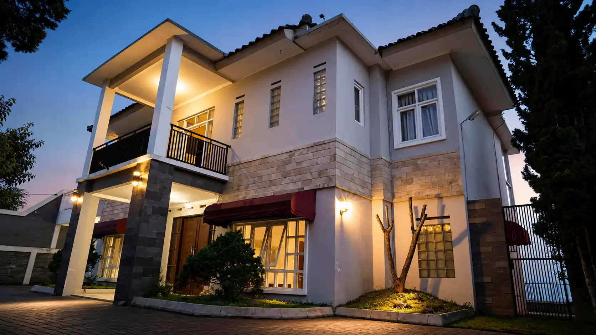
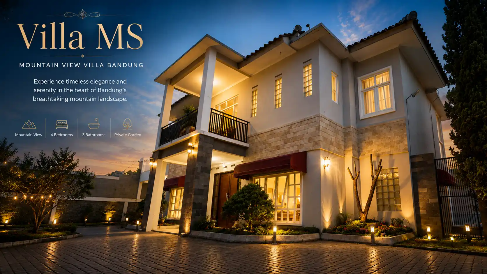
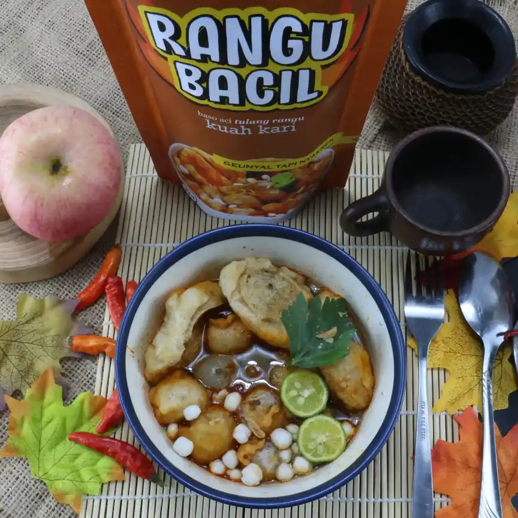
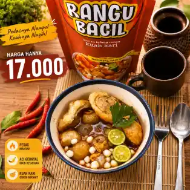
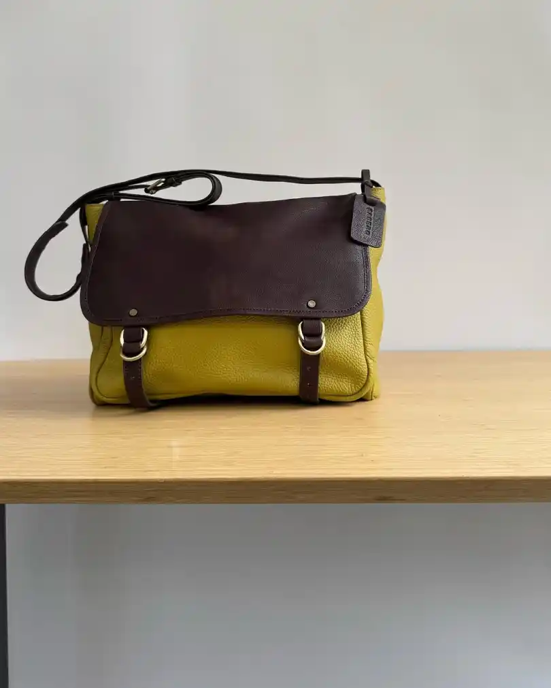
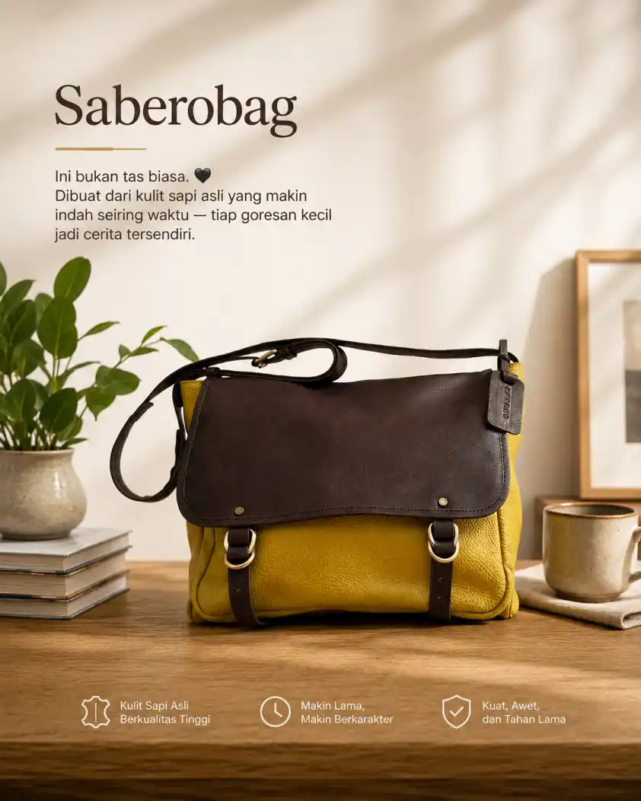

#NodeUpFrameLab
Transforming Product Visuals into High-Selling Assets. Kami membantu brand & UMKM mengubah visual produk biasa menjadi lebih premium, menarik, dan siap jual.
Upgrade Visual ProdukDi era digital, visual menentukan bagaimana produk dilihat, dipercaya, dan akhirnya dibeli. UpFrame Lab hadir untuk membantu produk tampil lebih standout tanpa kehilangan identitas aslinya.
Produk tetap asli dengan enhancement visual yang lebih premium.
Visual dibuat untuk menarik perhatian dan meningkatkan trust.
Siap digunakan untuk Shopee, Tokopedia, Instagram Shop, dan Ads.
Perubahan kecil pada visual bisa mengubah persepsi nilai produk secara besar.






Jadikan produkmu terlihat lebih premium, lebih dipercaya, dan lebih siap bersaing di era digital.
DM UpFrame Lab